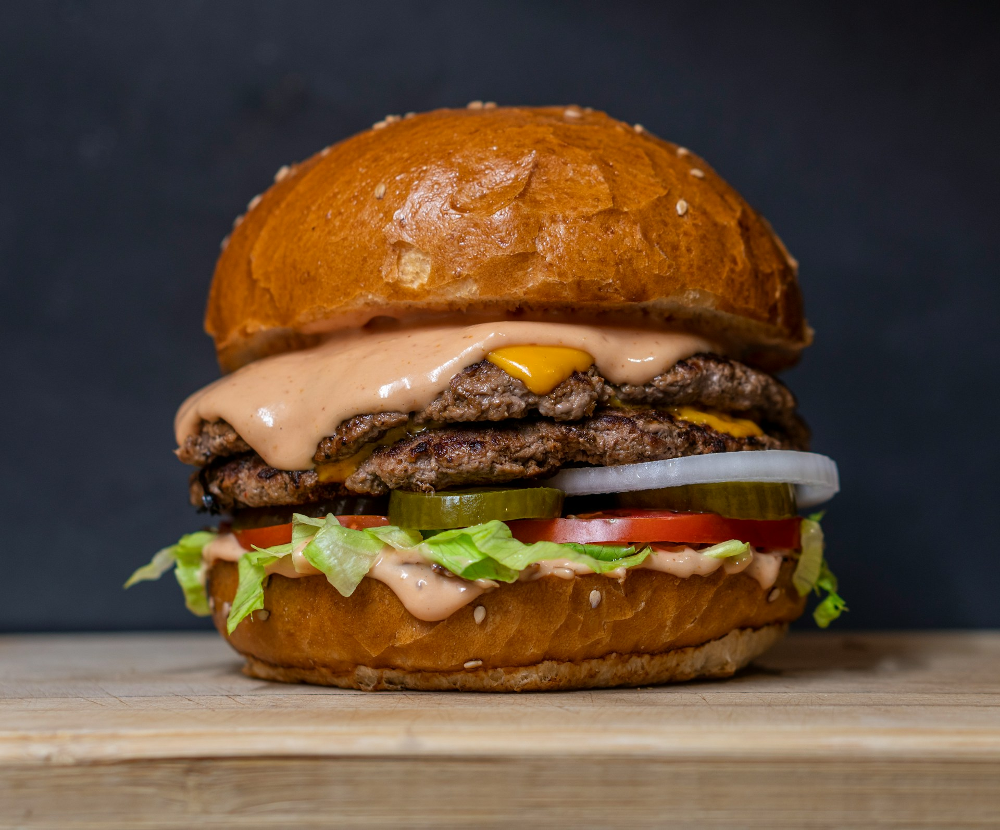

Home
Burger

Description
A beef burger is a timeless comfort food loved around the world.
It starts with a seasoned ground beef patty grilled to juicy perfection.
Melted cheese, crisp lettuce, tomato, and other toppings add flavor and crunch.
All of it comes together inside a soft bun, making every bite satisfying.
Ingredients
- Ground beef (about 500g / 1 lb, 80/20 lean-to-fat ratio)
- Salt and black pepper (for seasoning)
- Burger buns
- Slices of cheese
- Lettuce
- Tomato slices
- Onion slices
- Pickles (optional)
- Sauce (as preferred)
Steps
- Season the ground beef with salt and pepper, then shape into equal-sized patties.
- Preheat a grill or pan over medium-high heat.
- Cook the patties for 3–4 minutes per side, until browned and cooked to your liking.
- Place cheese slices on the patties in the last minute of cooking to melt.
- Lightly toast the burger buns on the grill or pan.
- Spread your choice of sauces on the buns.
- Assemble with lettuce, tomato, onion, pickles, and the cooked patty.
- Serve warm and enjoy your homemade beef burger.